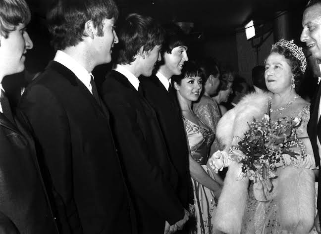
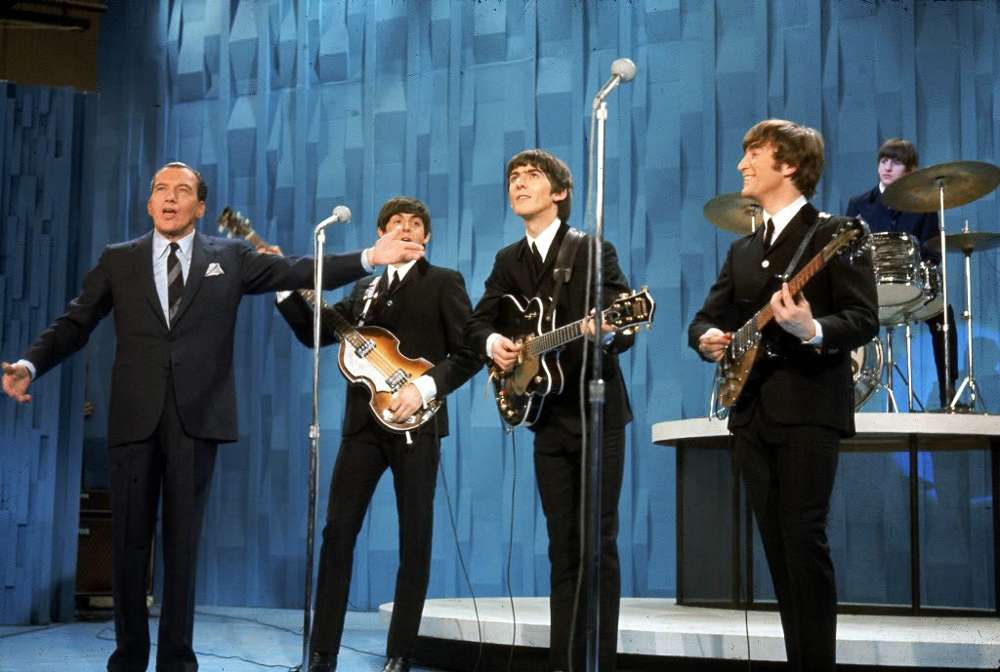
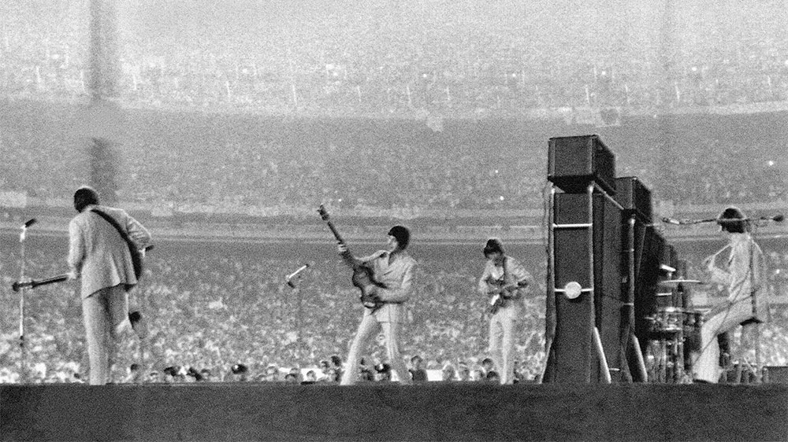
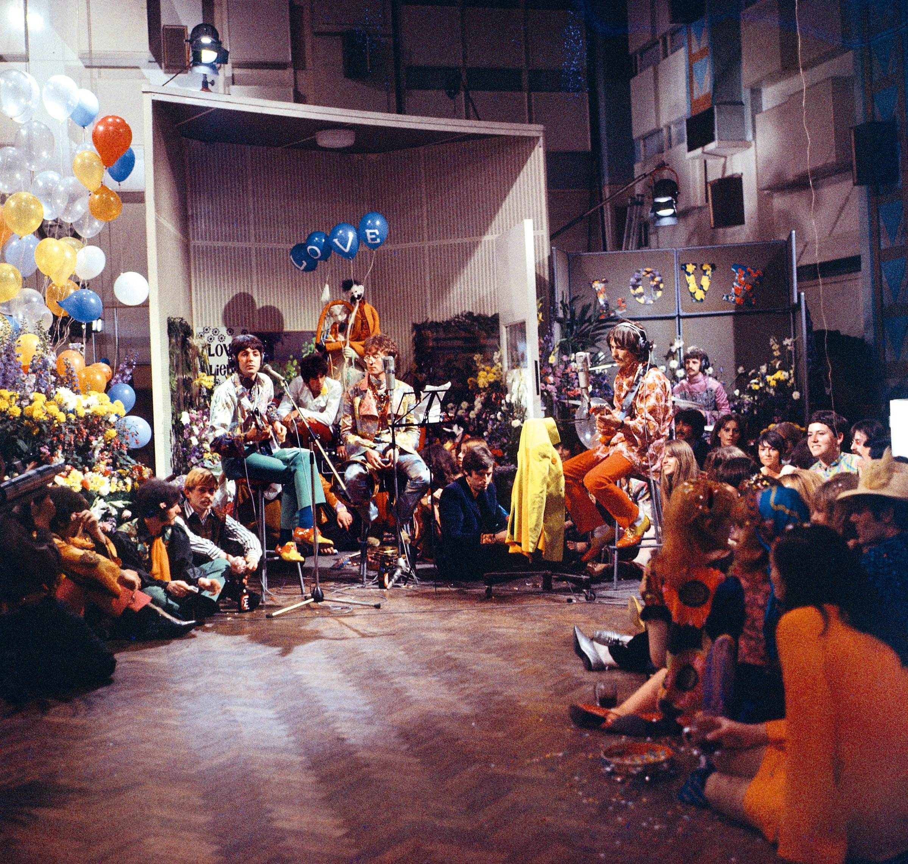
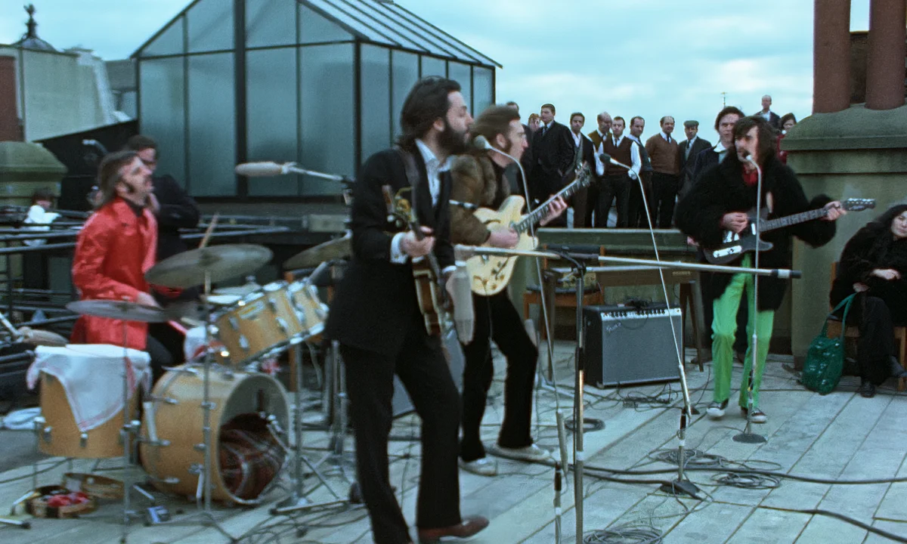

The Beatles Most Iconic Performances
Home Page
The Beatles' Royal Variety performance, 1963
: their musical prestige is secured at home in England.
Beatles Royal Variety Performance

The Beatles on the Ed Sullivan Show, 1964
: the broadcast which inspired countless musicians to pick up an instrument.
Beatles on Ed Sullivan

The Beatles at Shea Stadium, 1965
: a massive and deafening show!
Beatles at Shea Stadium, 1965

The Beatles on the first global broadcast, Our World, 1967
: all you need is love!
Beatles Our World Broadcast

The Beatles last performance, 1969
: on the roof of Apple Records in London.
Beatles rooftop concert
